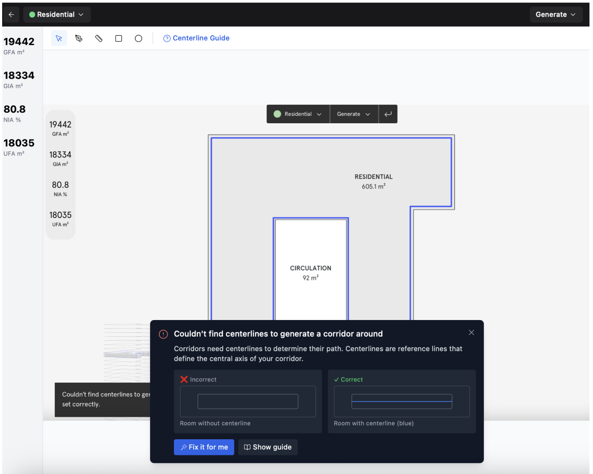
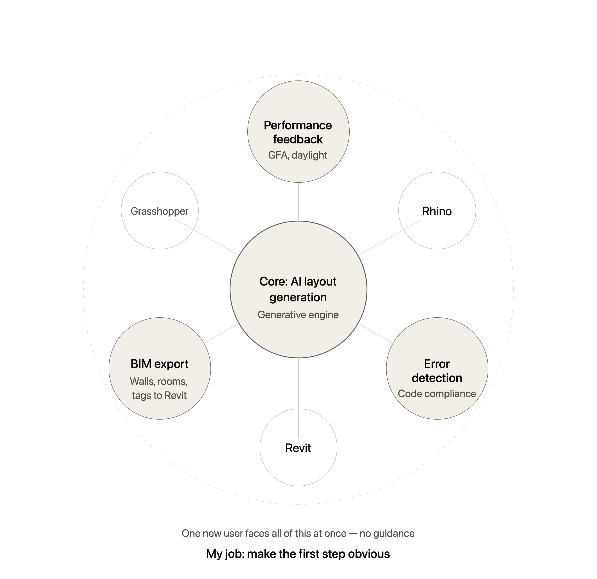
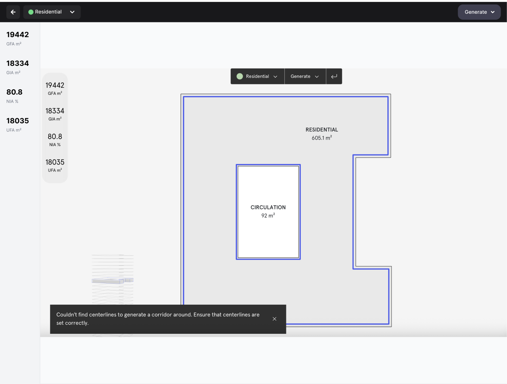
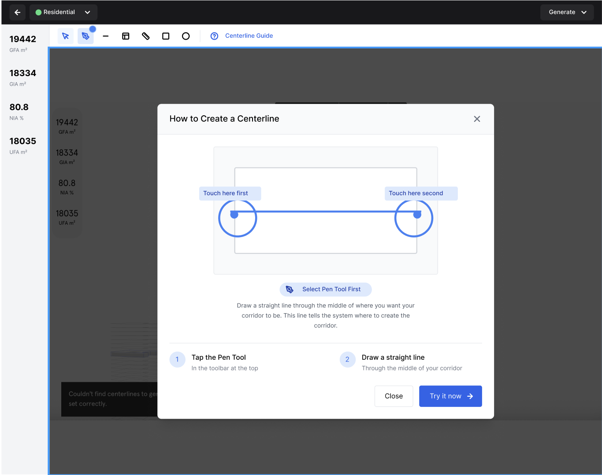
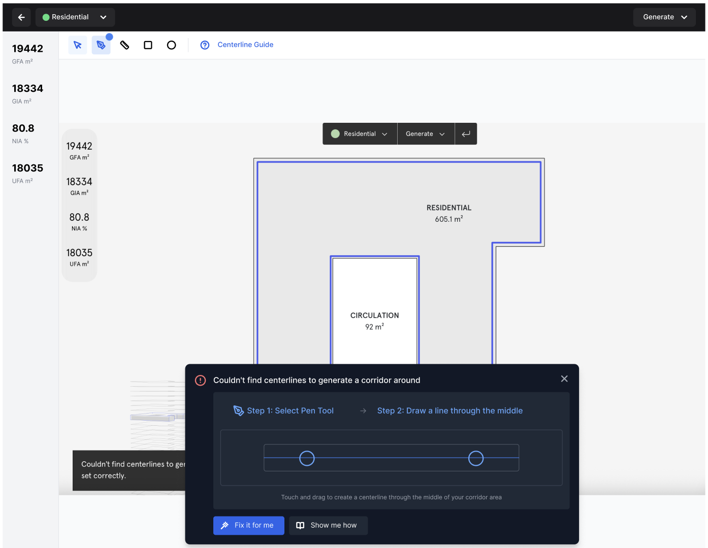

Finch 3D
Turning an unusable first step into a guided flow — diagnosing an onboarding failure and redesigning the experience from the ground up.

A hard stop on day one
This wasn’t a bug. It wasn’t a missing feature. It was an onboarding failure — a domain-specific term presented to general users with no explanation, no guidance, and no way forward.
The tool’s only response to the failure was a bare toast: “Couldn’t find centerlines… Ensure that centerlines are set correctly.” No definition. No example. No next step. Every user who couldn’t define one hit a complete wall — not friction, not confusion, but a hard stop. The onboarding failure was the product failure.
Research constraints
No direct user interviews were possible. I diagnosed the problem through the tool itself, competitive analysis of how AEC tools like Rhino, SketchUp, and Revit handle domain-specific onboarding, and architectural domain knowledge to reconstruct the user’s mental model at the point of failure.
The Finch 3D ecosystem
Understanding why the failure happened meant first understanding what Finch 3D actually is — not just a design tool, but an AI-powered constraint engine embedded in an architectural workflow, connected to external inputs that users bring from other software.

A constraint engine, not an image generator
Finch 3D’s AI core is a graph-based constraint satisfaction engine. A building layout is represented as a graph — rooms as nodes, with edges encoding adjacency requirements, structural dependencies, and circulation constraints. When an architect inputs a floor plan, the engine traverses the space of valid configurations and returns optimised layout variations that satisfy all constraints simultaneously.
This distinction matters for onboarding design. Users encountering the “center line” prompt aren’t being asked to draw something — they’re being asked to define a structural axis that the constraint engine uses to anchor its spatial graph. The tool is asking for a precise geometric input that unlocks the entire computation. Without it, there is nothing to compute.
Why the centerline is the critical input
In architectural drawing, a centerline marks the structural axis of a wall — the reference from which dimensions, loads, and spatial relationships are measured. In Finch 3D’s constraint model, it’s the seed: the anchor from which the graph of spatial relationships is built outward. Asking a user to supply it with no context is equivalent to asking someone to provide a database primary key without telling them what a database is.
Why users got stuck
Domain jargon as a blocker
“Center line” is an architectural term with a specific technical meaning. For non-specialists — or architects new to computational tools — it was meaningless, and the tool gave no definition.
No progressive guidance
The tool presented a blank canvas and a requirement. No step-by-step onboarding, no example, no visual cue showing what “selecting and connecting points” looked like.
No direct user research available
No user interviews were possible. The challenge required reading the problem from the tool itself, competitor analysis, and architectural domain knowledge.
Translating 3D thinking into a flat UI
Helping users grasp spatial, structural concepts through a flat interface meant turning 3D architectural thinking into clear, sequential steps anyone could follow.
From discovery to solution
Diagnose the tool
Opened and used Finch 3D as a first-time user, documenting every moment of confusion. The undocumented centerline requirement emerged immediately as the critical failure point.
Secondary research
With no interviews available, studied architectural software documentation, forum discussions, and reviews to reconstruct the typical user’s mental model when encountering “centerline.”
Competitive analysis
Analysed 5+ competing tools (Rhino, SketchUp, Revit) for how they handle domain-specific onboarding. The best tools showed examples before asking for input.
Wireframing the solution
Designed a step-by-step guided flow: define what a centerline is, show a visual example, prompt the user to click the first point, then connect points — with live validation at each step.
The guided flow I designed
Finch 3D provided no onboarding for the centerline requirement — the blank error state was all users saw. The redesign explains the term, shows the destination, and validates each step in real time.

A single dismissive toast: “Couldn’t find centerlines… Ensure that centerlines are set correctly.” No explanation, no example, no way forward.
A guided panel that defines the term, contrasts incorrect vs correct, and offers a clear next action — “Fix it for me” or “Show guide.”
Inside the guided experience


Three principles that guided every decision
Explain domain terms before demanding them. Define domain-specific language the moment it’s first encountered — in context, before the user needs to act on it.
Show the destination before asking for the journey. Users can’t give meaningful input until they see what the output looks like. Showing a completed center line first removed the biggest blocker.
Validate in real time, not at submission. Each step gave immediate visual feedback — the centerline appeared as points connected. Errors were visible and correctable without losing progress.
Outcome
“The centerline problem was never a technical problem — it was a communication problem. Once I named it as that, the solution was obvious.”
Built to scale, not just to ship
The guided flow was built on a reusable foundation — defined typography, a neutral colour system with accessibility validation, and component variants in Figma — so the solution could extend consistently across the product.

See the prototype in action
From blocked to guided in four steps
I designed a guided onboarding flow built on three principles: explain domain terms before demanding them, show the destination before asking for the journey, and validate in real time rather than at submission.
The solution replaced the bare error toast with a panel that defines the term, contrasts an incorrect centerline with a correct one visually, and offers two recovery paths — “Fix it for me” or “Show guide.” The guide walks users through four steps with live canvas feedback at each stage: explain → show → place → connect.